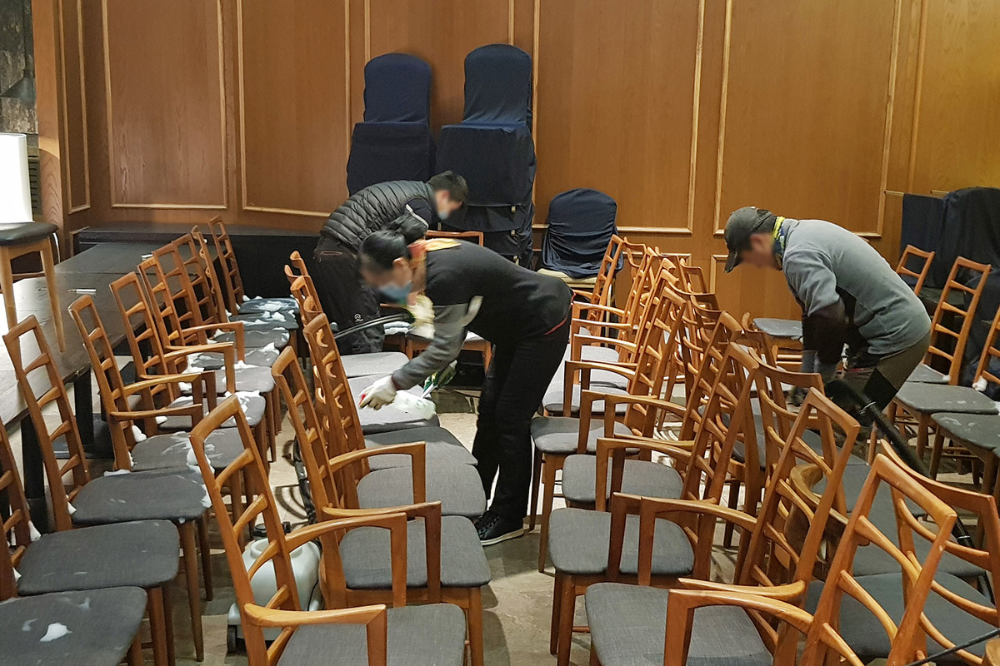

페트릭 청소
관리하기 힘든 패브릭 소재 가구들
오랜 시간 관리하지 않은 패브릭 소재의 가구는 진드기와 곰팡이가 서식하기 좋은 환경이 됩니다. 이를 방지하기 위해 그린죤은 주기적인 살균 청소 서비스를 제공합니다.

페트릭 청소 대상
호텔
사무실
회사
상가
관공서
소파
개인을 제외한 호텔, 관공서, 전시장, 학교 강당, 식당 등 상업시설 및 공공기관의 패브릭 소재 소파와 의자를 청소하고 있습니다.
페트릭 청소 갤러리
청소 전과 후를 비교할 수 있습니다
페트릭 청소 과정이 담긴 동영상
사진과 영상 갤러리에서 더 많은 청소 과정을 확인할 수 있습니다.